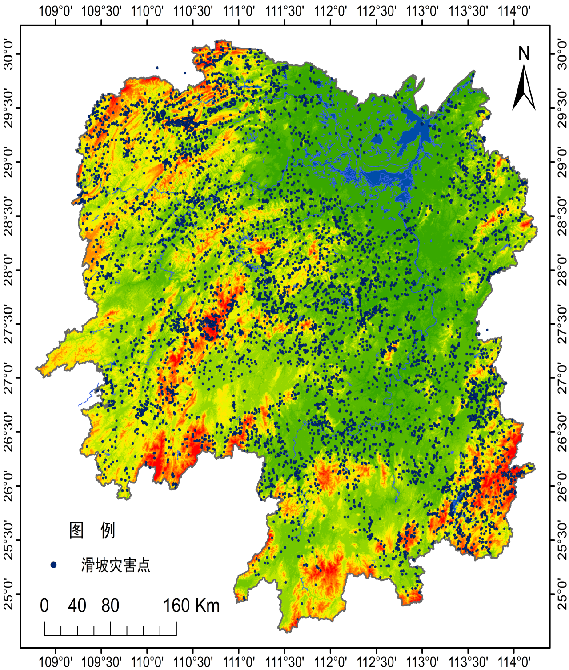
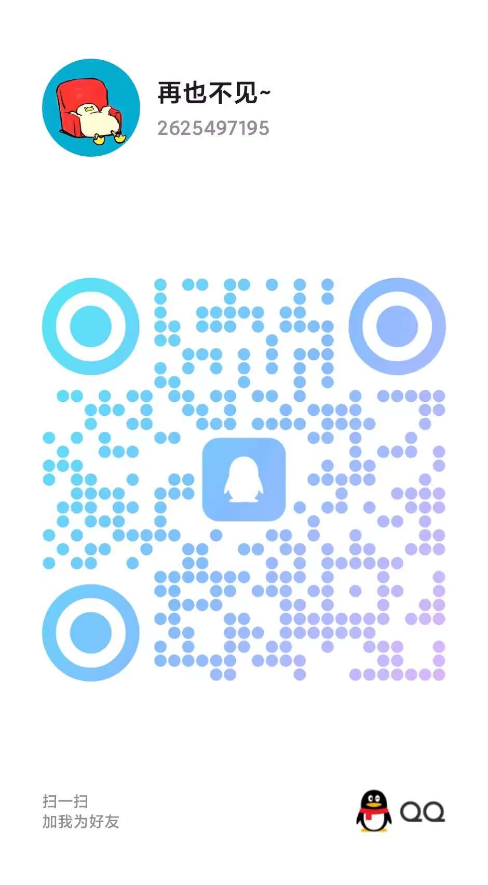

个人简历
Scan My QR Code
-
名字潘子欣
-
生日2003年2月23日
-
专业地理信息科学
-
政治面貌共青团员
-
联系电话13006721136
-
电子邮箱2625497195@qq.com
潘子欣
2021.09入学湖南科技大学就读地理信息科学专业，目前绩点为3.12/4，专业排名第14。
熟练使用Microsoft Office、Origin、Python、ENVI、ArcGIS Pro、Visio等软件。
主修课程有地图学、地理信息系统原理、GIS空间数据库、遥感概论、遥感数字图像处理、普通测量学、数据库原理及应用、数据结构、面向对象程序设计、自然地理学、人文地理学、遥感地学分析、土地评价与管理等。
科研经历（一）
-
主持校级大学生创新训练项目：植被指数与滑坡灾害相互响应的研究
研究内容:
2023.06
湖南省滑坡灾害频繁。通过 DEM 和地表覆盖数据，获滑坡的空间分布特征；采用SG滤波处理植被指数(NDVI、EVI2)产品，同时采用MK突变方法与贝叶斯时间序列方法，分析其植被指数的时空突变，并结合滑坡点得到植被指数与滑坡灾害点的相互关系。
研究方法：
SG滤波、MK突变、贝叶斯时间序列（BEAST） - 
-
全国大学生GIS应用技能大赛
（图片右下角的数字为图片切换）
2023.11 -
土地规划生态系统服务功能重要性评价——以广州市为例
研究方法：
2024.6
[生态系统服务功能重要性] = Max([生物多样性维护重要性], [水源涵养重要性], [水土保持重要性], [防风固沙重要性], [海岸防护重要性])


-
古建筑室内外联合三维重建——以湘潭文庙为例
研究方法:
2024.06
基于室外无人机倾斜摄影测量技术与室内激光雷达空地融合建模方法对湘潭文庙进行重建。 -
基于GEE的实训
1.选取湖南省任一城市为研究区，00-23年任选一年，选取研究区一年内符合云量要求的所有影像，每一张影像制作一张地表覆盖分类图，最后形成研究区一年内地表覆盖系列图。
选取湖南省任一城市为研究区，00-23年任选一年，制作研究区RSEI、NDVI 、WET、LST、NDBSI图像。
技能证书

{kind=link}
{kind=link}
{kind=link}
{kind=link}
荣誉证书
{kind=link}
{kind=link}
{kind=link}
{kind=link}
{kind=link}
{kind=link}
联系方式
